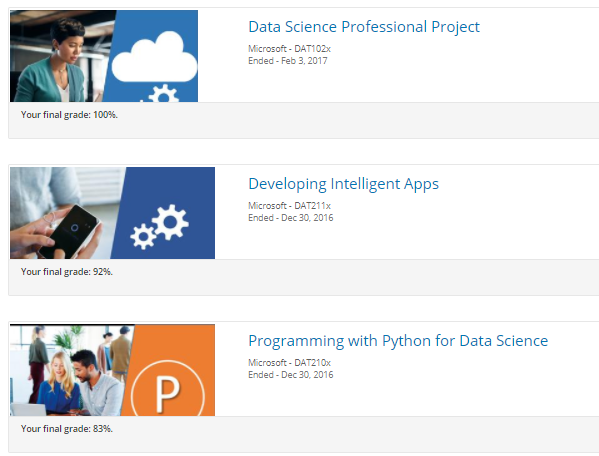

Loan approval models
Loan approval is a probability problem. A bank or credit provider scores an application against the chance it gets repaid, and the factors that set that probability interact in ways no single rule captures.
I built statistical models to predict the outcome for individual applications, and entered them against the field. This was the capstone for the Microsoft Professional Program in Data Science.
- R
- Statistical modelling
- Predictive analytics
- Azure ML
